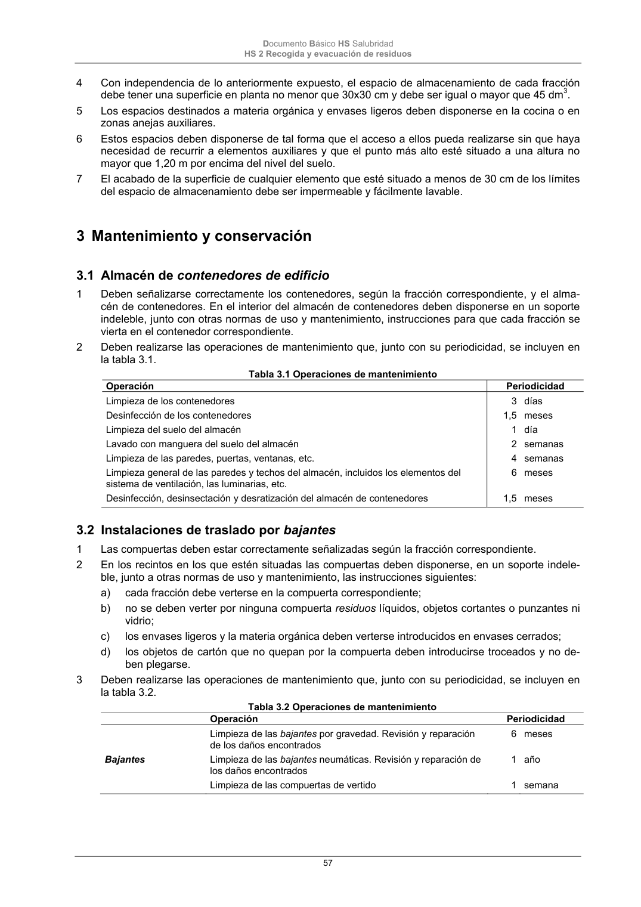

DB-HS · Página 57 · versión 2022-06-14
SHA256: 68df3caacc95f71aee2ec1ba7b2c65ae66155c21e3a8785521b8fdd4fd640d3b · página física 57 de 184 · métodos de encabezado
solo si están cotejados.
Formatos: Markdown · JSON de bloques · PDF p. 57 · imagen PNG
Documento Básico HS Salubridad HS 2 Recogida y evacuación de residuos 57 4 Con independencia de lo anteriormente expuesto, el espacio de almacenamiento de cada fracción debe tener una superficie en planta no menor que 30x30 cm y debe ser igual o mayor que 45 dm3. 5 Los espacios destinados a materia orgánica y envases ligeros deben disponerse en la cocina o en zonas anejas auxiliares. 6 Estos espacios deben disponerse de tal forma que el acceso a ellos pueda realizarse sin que haya necesidad de recurrir a elementos auxiliares y que el punto más alto esté situado a una altura no mayor que 1,20 m por encima del nivel del suelo. 7 El acabado de la superficie de cualquier elemento que esté situado a menos de 30 cm de los límites del espacio de almacenamiento debe ser impermeable y fácilmente lavable. 3 Mantenimiento y conservación 3.1 Almacén de contenedores de edificio 1 Deben señalizarse correctamente los contenedores, según la fracción correspondiente, y el alma- cén de contenedores. En el interior del almacén de contenedores deben disponerse en un soporte indeleble, junto con otras normas de uso y mantenimiento, instrucciones para que cada fracción se vierta en el contenedor correspondiente. 2 Deben realizarse las operaciones de mantenimiento que, junto con su periodicidad, se incluyen en la tabla 3.1. Tabla 3.1 Operaciones de mantenimiento Operación Periodicidad Limpieza de los contenedores Desinfección de los contenedores Limpieza del suelo del almacén Lavado con manguera del suelo del almacén Limpieza de las paredes, puertas, ventanas, etc. Limpieza general de las paredes y techos del almacén, incluidos los elementos del sistema de ventilación, las luminarias, etc. Desinfección, desinsectación y desratización del almacén de contenedores 3 1,5 1 2 4 6 1,5 días meses día semanas semanas meses meses 3.2 Instalaciones de traslado por bajantes 1 Las compuertas deben estar correctamente señalizadas según la fracción correspondiente. 2 En los recintos en los que estén situadas las compuertas deben disponerse, en un soporte indele- ble, junto a otras normas de uso y mantenimiento, las instrucciones siguientes: a) cada fracción debe verterse en la compuerta correspondiente; b) no se deben verter por ninguna compuerta residuos líquidos, objetos cortantes o punzantes ni vidrio; c) los envases ligeros y la materia orgánica deben verterse introducidos en envases cerrados; d) los objetos de cartón que no quepan por la compuerta deben introducirse troceados y no de- ben plegarse. 3 Deben realizarse las operaciones de mantenimiento que, junto con su periodicidad, se incluyen en la tabla 3.2. Tabla 3.2 Operaciones de mantenimiento Operación Periodicidad Bajantes Limpieza de las bajantes por gravedad. Revisión y reparación de los daños encontrados Limpieza de las bajantes neumáticas. Revisión y reparación de los daños encontrados Limpieza de las compuertas de vertido 6 1 1 meses año semana
